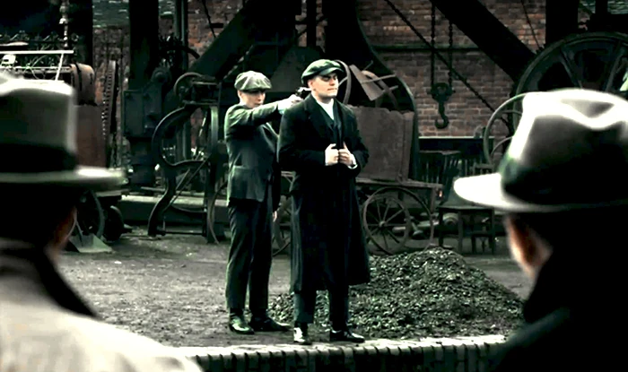
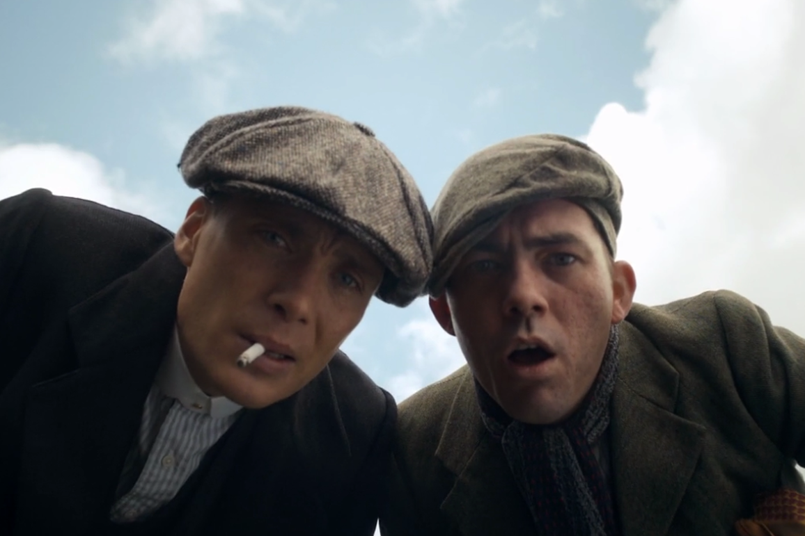
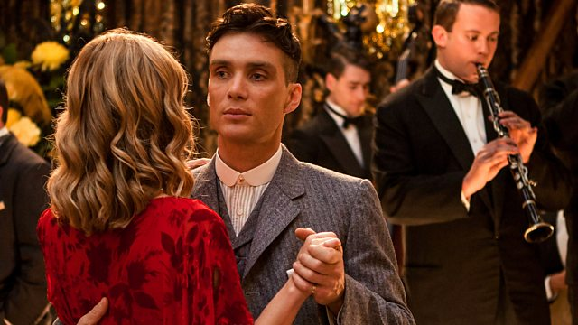
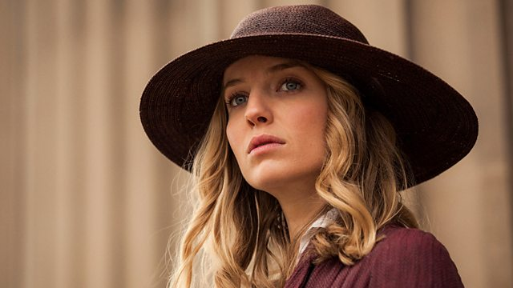
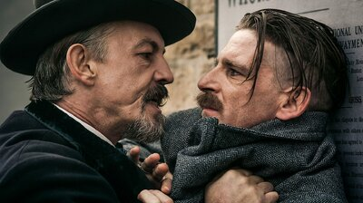
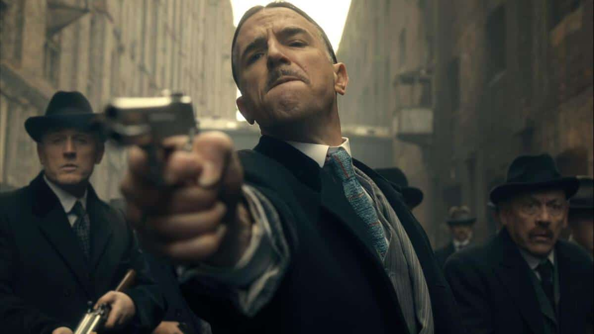

| Episodio 1 |
 |
Thomas Shelby reconoce una oportunidad para avanzar en el mundo criminal gracias a un cargamento perdido de armas.57 min |
|---|
| Episodio 2 |
 |
Thomas arregla una carrera de caballos para provocar a un capo local y comienza una guerra con una familia gitana. El inspector Campbell lleva a cabo una redada.58 min |
|---|
| Episodio 3 |
 |
Thomas planea acercarse a Billy Kimber en las carreras de Cheltenham y considera aceptar una oferta de simpatizantes del IRA que quieren comprarle las armas robadas.55 min |
|---|
| Episodio 4 |
 |
Mientras se intensifica la guerra con la familia Lee, Thomas sospecha de la prometida de su hermano. Campbell presiona a la pandilla para que entreguen las armas.59 min |
|---|
| Episodio 5 |
 |
Thomas lidia con un jefe del IRA obsesionado en vengar la muerte de su primo. Grace debe decidir si es leal a Campbell o a Thomas.56 min |
|---|
| Episodio 6 |
 |
Thomas se prepara para expulsar a Billy Kimber del poder, pero los secretos familiares y la persecución sin tregua de Campbell podrían llevarlo a la ruina.54 min |
|---|